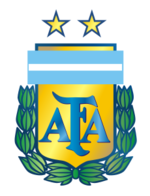
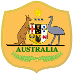
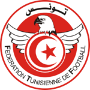

Grupo C
Argentina
Participações
- 17
Melhores Participações
- Campeão (1986) (1978
Técnico
- ALionel Scaloni
Pincipais Jogadores
- Lionel Messi
- Paulo Dybala
- Julián Álvarez
Tabela de jogos
| Rodada 1 | ||
|---|---|---|
| 22/11/2022 - 07h LUSAIL |
Argentina X Arábia Saudita | |
| Rodada 2 | ||
| 26/11/2022 - 16h LUSAIL |
Argentina X México | |
| Rodada 3 | ||
| 30/11/2022 - 16h ESTADIO 974 |
 Polônia X Argentina Polônia X Argentina |
|
Arábia Saudita
Participações
- 3
Melhores Participações
- Oitavas de final (12ª em 1994)
Técnico
- Hervé Renard
Principais Jogadores
- Salman Al-Faraj
- Firas Al-Buraikan
Tabela de jogos
| Rodada 1 | ||
|---|---|---|
| 22/11/2022 - 07h LUSAIL |
Argentina X Arábia Saudita | |
| ROdada 2 | ||
| 26/11/2022 - 07h EDUCATION CITY STADIUM |
Polônia X Arábia Saudita |
|
| Rodada 3 | ||
| 30/11/2022 - 16h LUSAIL |
Arábia Saudita X México | |
México
Participações
- 15
Melhores Participações
- Eliminado nas quartas de final (1970) (1986)
Técnico
- Gerardo Martino
Principais Jogadores
- Andrés Guardado
Tabela de jogos
| Rodada 1 | |
|---|---|
| 22/11/2022 - 13h ESTÁDIO 974 |
México X Polônia |
| Rodada 2 | |
| 26/11/2022 - 16h LuSAIL |
México X Argentina |
| Rodada 3 | |
| 30/11/2022 - 16h LUSAIL |
Arabia Saudita X México |
Polônia
Participações
- 8
Melhores Participações
- Terceiro lugar (1974) (1974)
Técnico
- Czesław Michniewicz
Pincipais Jogadores
- Robert Lewandowski
Tabela de jogos
| Rodada 1 | |
|---|---|
| 22/11/2022 - 13h ESTADIO 974 |
México X Polônia |
| Rodada 2 | |
| 26/11/2022 - 10h EDUCATION CITY STADIUM |
Polônia X Arabia Saudita |
| Rodada 3 | |
| 30/11/2022 - 16h ESTADIO 974 |
Polônia X Argentina |
Grupo D
Franç
Participações
- 15
Melhores Participações
- Campeão (1998) (2018)
Técnico
- Didier Deschamps
Pincipais Jogadores
- Kylian Mbappé
- Ousmane Dembélé
Tabela de jogos
| Rodada 1 | |
|---|---|
| 22/11/2022 - 16h ESTÁDIO Al-Wakrah |
França X Australia  |
| Rodada 2 | |
| 26/11/2022 - 13h ESTADIO 974 |
França X Dinamarca |
| Rodada 3 | |
| 30/11/2022 - 12h EDUCATION CITY |
 Tunísia X França |
Gana
Participações
- 5
Melhores Participações
- Oitavas de final (2006)
Técnico
- Graham Arnold
Pincipais Jogadores
- Mathew Ryan
Tabela de jogos
| Rodada 1 | |
|---|---|
| 22/11/2022 - 16h ESTÁDIO Al-Wakrah |
França X Australia |
| Rodada 2 | |
| 26/11/2022 - 07h ESTÁDIO Al-Wakrah |
Tunísia X Australia |
| Rodada 3 | |
| 30/11/2022 - 12h ESTÁDIO Al-Wakrah |
Australia X Dinamarca |
Uruguai
Participações
- 5
Melhores Participações
- Quartas-de-final (1998)
Técnico
- Kasper Hjulmand
Pincipais Jogadores
- Christian Eriksen
- Martin Braithwaite
- Andreas Christensen
Tabela de jogos
| Rodada 1 | |
|---|---|
| 22/11/2022 - 10h EDUCATION CITY |
Dinamarca X Tunísia |
| Rodada 2 | |
| 26/11/2022 - 13h ESTÁDIO 974 |
Dinamarca X França |
| Rodada 3 | |
| 30/11/2022 - 12h ESTÁDIO Al-Wakrah |
Austrália X Dinamarca |
Tunísia
Participações
- 5
Melhores Participações
- Nenhuma
Técnico
- Jalel Kadri
Pincipais Jogadores
- Jalel Kadri
Tabela de jogos
| Rodada 1 | |
|---|---|
| 22/11/2022 - 10h EDUCATION CITY |
Dinamarca X Tunísia |
| Rodada 2 | |
| 26/11/2022 - 07h ESTÁDIO Al-Wakrah |
Tunísia X Australia |
| Rodada 3 | |
| 30/11/2022 - 12h EDUCATION CITY |
Tunísia X França |